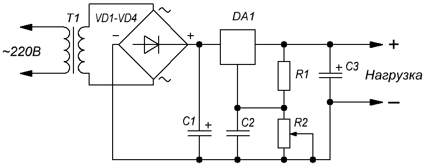
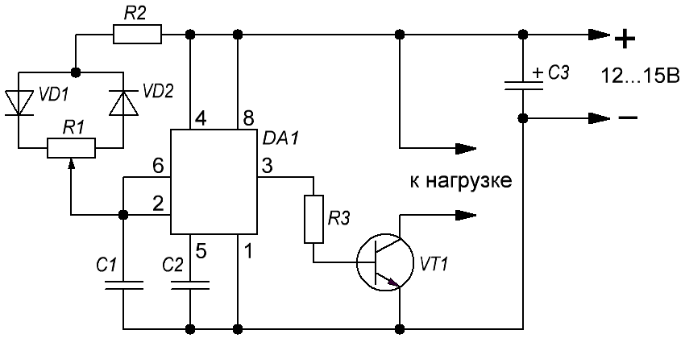

Светорегуляторы на микросхеме
Для регулирования мощностью на нагрузку в цепях постоянного тока 12 В, часто используют интегральные стабилизаторы КР142ЕН12. Применение данной микросхемы упрощает разработку и монтаж устройств. Такой самодельный диммер (рис. 1) прост в настройке и обладает функциями защиты.

Таблица 1
| Обозначение | Наименование | Номинал | Количество | Примечание |
|---|---|---|---|---|
| C1 | Конденсатор электролитический | 1000 мкФ - 25 В | 1 | |
| C2 | Конденсатор | 0,33 мкФ | 1 | |
| C3 | Конденсатор электролитический | 470 мкФ - 35 В | 1 | |
| DA1 | Стабилизатор интегральный | КР142ЕН12А | 1 | LM317T, Imax=1,5 A |
| R1 | Резистор постоянный | 360 Ом - 0,5 Вт | 1 | МЛТ-0,5 |
| R2 | Резистор переменный | 6,8 кОм | 1 | |
| Т1 | Трансформатор | 220 В / 15 В | 1 | |
| VD1-VD4 | Диод выпрямительный | КД202 | 4 |
С помощью переменного резистора R2 создается опорное напряжение на управляющем электроде микросхемы. Напряжение на выходе регулируется от десятых долей вольта до 12 В. Данным регулятором можно управлять светодиодной лентой 12 В длиною до 3 м.
На рисунке 2 представлена схема светорегулятора на микросхеме NE555, который управляет силовым ключом КТ819Г, ШИМ-импульсами. В таком режиме транзистор пребывает в двух состояниях: полностью открыт или полностью закрыт. Падение напряжения на нем минимальны и позволяют использовать радиатор транзистора с малой площадью.

Таблица 2
| Обозначение | Наименование | Номинал | Количество | Примечание |
|---|---|---|---|---|
| C1 | Конденсатор | 0,1 мкФ | 1 | |
| C2 | Конденсатор | 0,01 мкФ | 1 | |
| C3 | Конденсатор электролитический | 470 мкФ - 25 В | 1 | |
| DA1 | Микросхема | NE555 | 1 | |
| R1 | Резистор переменный | 50 кОм | 1 | |
| R2, R3 | Резистор постоянный | 1 кОм - 0,25 Вт | 2 | |
| VD1, VD2 | Диод выпрямительный | 1N4148 | 2 | |
| VT1 | Транзистор биполярный | КТ819Г | 1 |